Lecture 7 - Synchronization¶
Race Condition¶
Several processes (or threads) access and manipulate the same data concurrently and the outcome of the execution depends on the particular order in which the access takes place, is called a race-condition.
- Single Core will have race condition -- Interupts
Critical Section¶
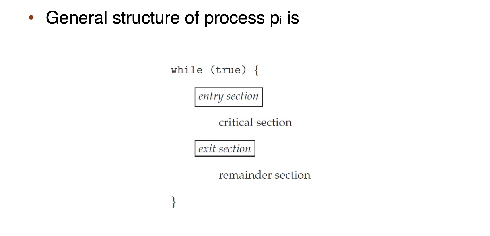
Only one process can be in the critical section
- when one process in critical section, no other may be in its critical section
- each process must ask permission to enter critical section in entry section
- the permission should be released in exit section
- Remainder section
How to achieve protection of critical section in single core system?
Stop the Interrupts?
Protection of critical section can only be achieved by Synchornization in multi-core system.
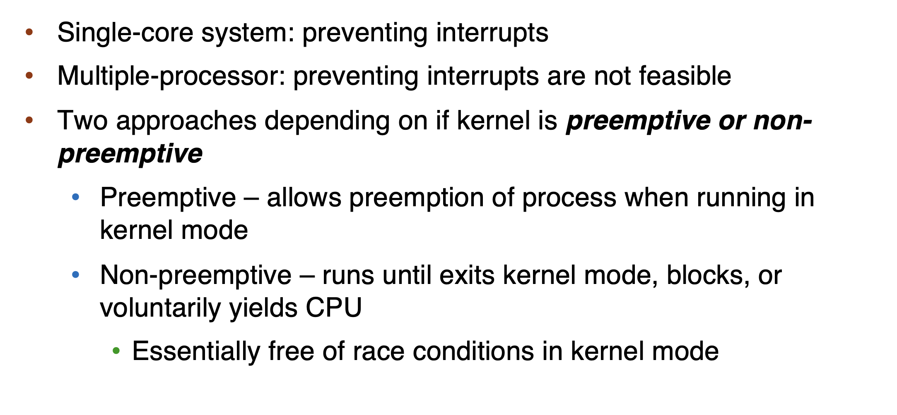
Solution to Critical-Section: Three Requirements [Important]!
1. Mutual Exclusion
- only one process can execute in the critical section
2. Progress
- if no process is executing in its critical section and some processes wish to enter their critical section, then only those processes that are not executing in their remainder sections can participate in deciding which will enter its critical section next, and this selection cannot be postponed indefinitely
- 线程没有在执行critical section时，必须在申请进入critical section的线程中选择一个进入，允许其执行，不能无限期地推迟
3. Bounded waiting
- There exists a bound, or limit, on the number of times that other processes are allowed to enter their critical sections after a process has made a request to enter its critical section and before that request is granted
- It prevents starvation
Solutions¶
Peterson's Solution¶
Only works for two processes! It assumes that LOAD and STORE are atomic
Two processes share two variables
boolean flag[2]: whether a process is ready to enter the critical sectionint turn: whose turn it is to enter the critical section
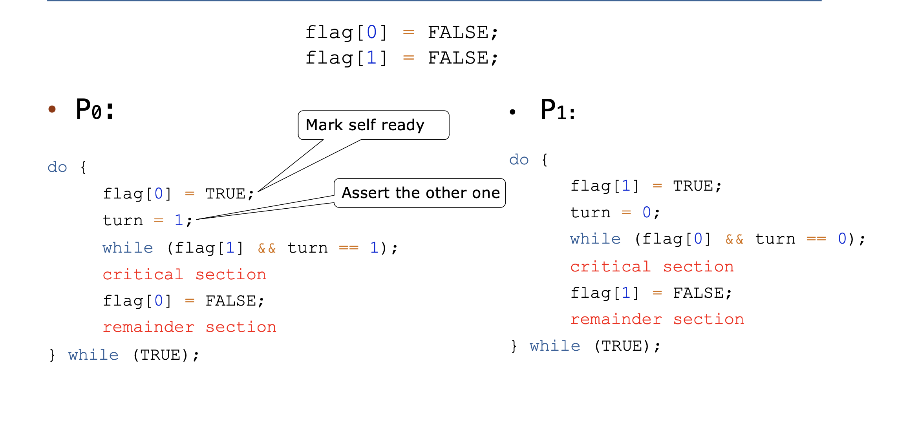
Mutual exclusion is preserved
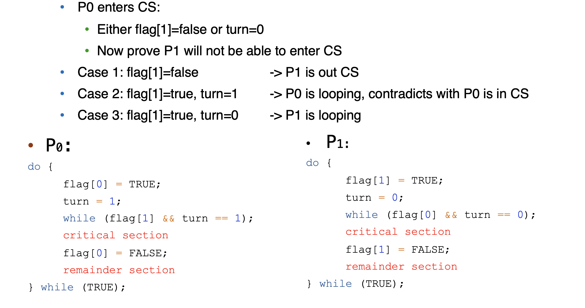
Progress is preserved
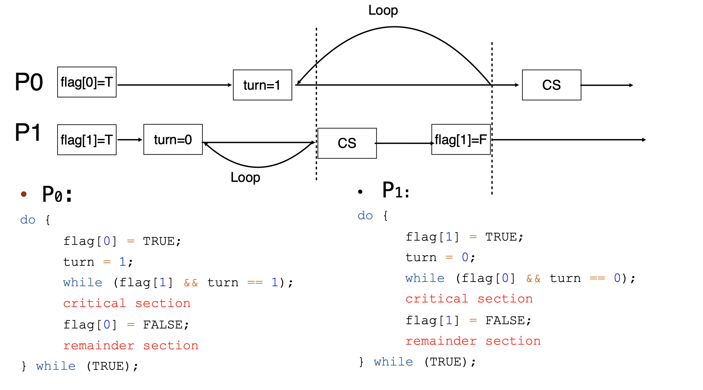
Bounded waiting is preserved
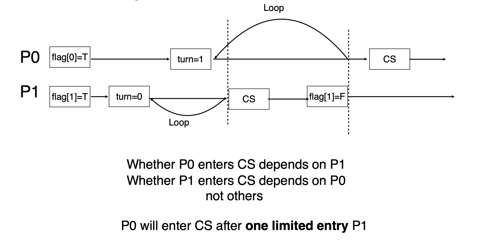
- 不能调整代码顺序，否则可能会出现问题
Hardware Support Synchronization¶
Memory Barriers [不考]¶
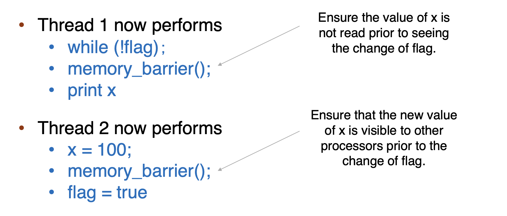
Hardware instructions¶
test-and-set: either test memory word and set value¶
bool lock = FALSE
do {
while (test_set(&lock)); // busy wait
critical section
lock = FALSE;
remainder section
} while (TRUE);
- Mutual Exclusion is preserved
- Progress is preserved
- Bounded waiting is not preserved!
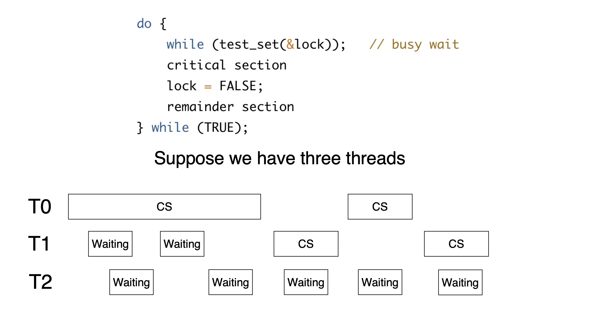
Solution:
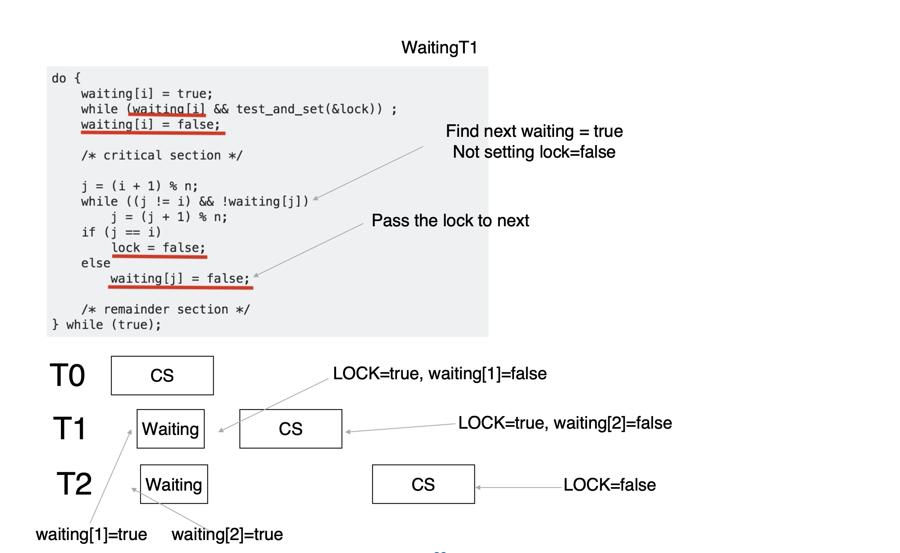
compare-and-swap: compare and swap contents of two memory words¶
int compare_and_swap(int *value, int expected, int new_value)
{
int temp = *value;
if (*value == expected)
*value = new_value;
return temp;
}
- Executed atomically
- Returns the original value of passed parameter value
- Set the variable value the value of the passed parameter
new_valuebut only if*value == expectedis true. That is, the swap takes place only under this condition.
while (true)
{
while (compare_and_swap(&lock, 0,1)!= 0); /* do nothing */
/* critical section */
lock = 0;
/* remainder section */
}
In Practice¶
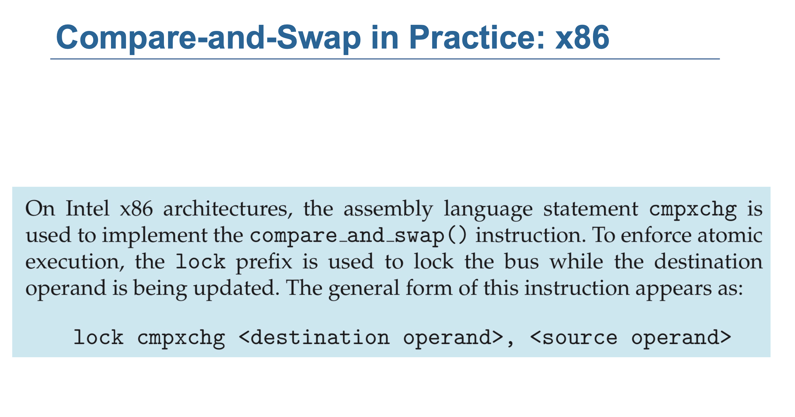
- In ARM,
LDREXandSTREXinstructions are used to implementcompare-and-swap
ARM 的 LDXR 和 STXR 机制
- LDXR (Load Exclusive Register):从一个内存地址加载值，并在硬件层面进入 Exclusive Access 状态。这种状态由一个 本地监视器 (local monitor) 管理。
- Exclusive Access 状态表示线程声明对这块内存的独占权限。
- STXR (Store Exclusive Register): 试图将一个值写入 LDXR 加载的内存地址，但只有当 local monitor 保持 Exclusive Access 状态时，写入才能成功。
- 如果 local monitor 检测到 Exclusive Access 状态被破坏（例如，其他线程也访问了该地址），STXR 写入会失败。
- STXR 会返回一个状态码来指示操作是否成功：
- 成功：Exclusive Access 状态未被破坏，写入成功，状态码为 0。
- 失败：Exclusive Access 状态被破坏，写入失败，状态码为 1。
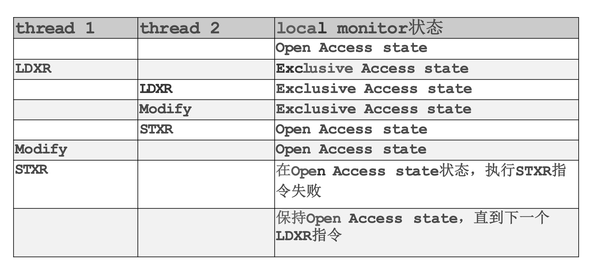
- thread 1 的 LDXR 会使 local monitor 进入 Exclusive Access 状态。
- 如果 thread 2 也在相同的内存地址执行了 LDXR，local monitor 不会直接变为 Open Access，但会使 thread 1 的独占访问状态失效。
- 当 thread 1 尝试执行 STXR 写回时，由于 Exclusive Access 状态已经丢失，STXR 写回失败
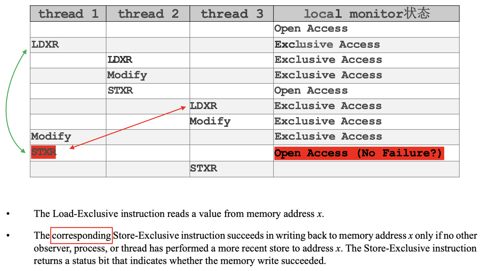
- 当 thread 1 在执行 STXR 前，如果 thread 2 或其他线程（比如 thread 3）对相同的内存地址执行了 LDXR，thread 1 的 Exclusive Access 状态就会失效。
- 如果此时 thread 3
- 当 thread 3 执行 LDXR 时， 重新进入 Exclusive Access 状态
- 如果此时 thread 1 尝试执行 STXR 写回，由于 Exclusive Access 状态已经丢失，STXR 写回失败 -- LDXR 和 STXR 是 coresponding 的！
Atomic variables¶
Typically, instructions such as compare-and-swap are used as building blocks for other synchronization tools.
One tool is an atomic variable that provides atomic (uninterruptible) updates on basic data types such as integers and booleans.
For example, the increment() operation on the atomic variable sequence ensures sequence is incremented without interruption:
void increment(atomic_int *v) {
int temp;
do {
temp = *v;
}while (temp != (compare_and_swap(v,temp,temp+1)));
}
In case another modification occurs
Mutex Locks¶
bool locked = false;
acquire() {
while (compare_and_swap(&locked, false, true))
; //busy waiting
}
release() {
locked = false;
}
- These two functions must be implemented atomically.
- Both test-and-set and compare-and-swap can be used to implement these functions.
Problem: Busy waiting is inefficient
- This lock therefore called a spinlock
Too Much Busy Waiting!
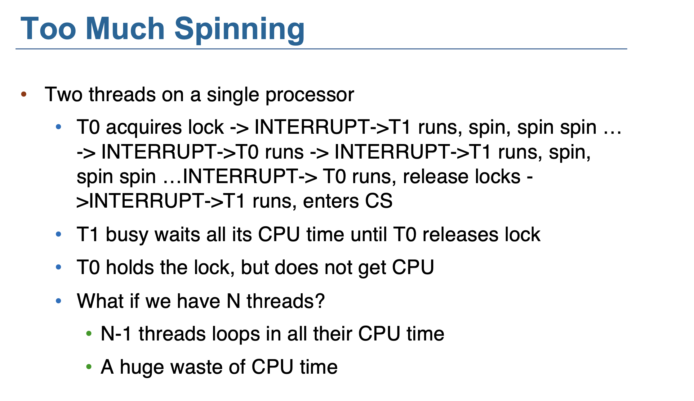
void init() {
flag = 0;
}
void lock() {
while (test_set(&flag, 1) == 1)
yield(); // give up the CPU
}
void unlock() {
flag = 0;
}
How to implement?
Semaphores¶
- Add a queue
-
When the lock is locked, change process’s state to SLEEP, add to the queue, and call
schedule() -
Semaphore Contain S – integer variable
- Can only be accessed via two indivisible (atomic) operations
-
wait() and signal() (Originally called P() and V()Dutch)
-
Counting semaphore: S can range over an unrestricted domain
- Binary semaphore: S can only be 0 or 1
- Can implement a counting semaphore S as a binary semaphore
Waiting Queue¶
- With each semaphore there is an associated waiting queue
- Each entry in a waiting queue has two data items: 1. value (of type integer) 2. pointer to next record in the list
Two operations:
- block – place the process invoking the operation on the appropriate waiting queue
- wakeup – remove one of processes in the waiting queue and place it in the ready queue
wait(semaphore *S) {
S->value--;
if (S->value < 0) {
add this process to S->list;
block();
}
}
signal(semaphore *S) {
S->value++;
if (S->value <= 0) {
remove a proc.P from S->list;
wakeup(P);
}
}
wait(semaphore *S) 1. S->value--：减少信号量的值。
- 如果 S->value >= 0：说明有可用的资源，当前进程成功获取资源。
- 如果 S->value < 0：说明资源已被占用，当前进程需要等待资源，进入阻塞状态。
- 如果信号量值小于 0：
- 当前进程被加入到信号量的等待队列 S->list。
- 调用 block()，让当前进程进入阻塞状态，等待资源。
signal(semaphore *S)
- S->value++：增加信号量的值。
- 如果 S->value > 0：说明没有进程在等待，直接结束。
- 如果 S->value <= 0：说明有进程在等待，唤醒等待队列中的一个进程。
- 如果有进程在等待队列中：
- 从等待队列中移除一个等待的进程（比如 P）。
- 调用 wakeup(P)，将进程 P 移到就绪队列中，准备运行。
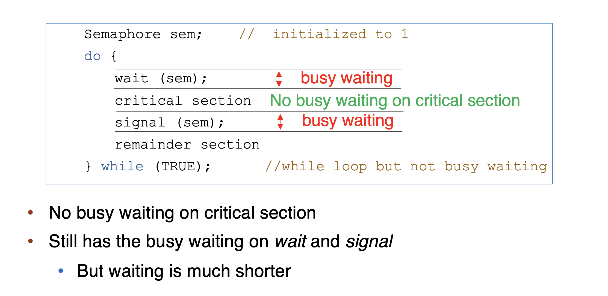
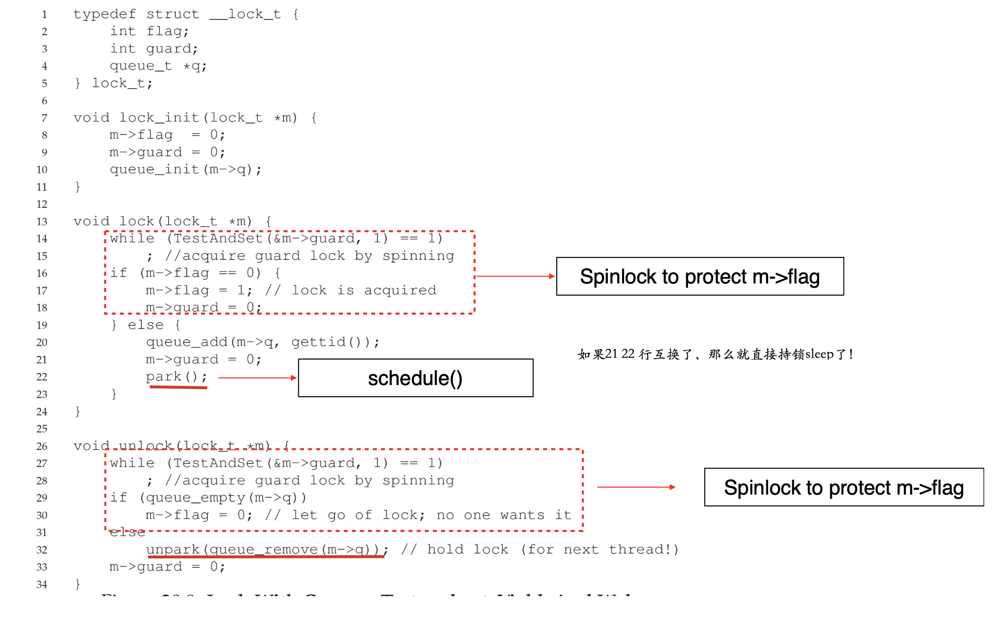
wait() 和 signal() 操作是原子操作，不会被中断。-- 也需要Mutex Lock
- 所以 critical section 没有busy waiting 但是
wait()和signal()有busy waiting
Comparison between mutex and semaphore¶
Mutex or spinlock¶
- Pros: no blocking
- Cons: Waste CPU on looping
- Good for short critical section
Semaphore¶
Critical section short -- constant context switch is time-consuming
- Pros: no looping
- Cons: context switch is time-consuming
- Good for long critical section
In Linux Kernel, spinlock is more common.
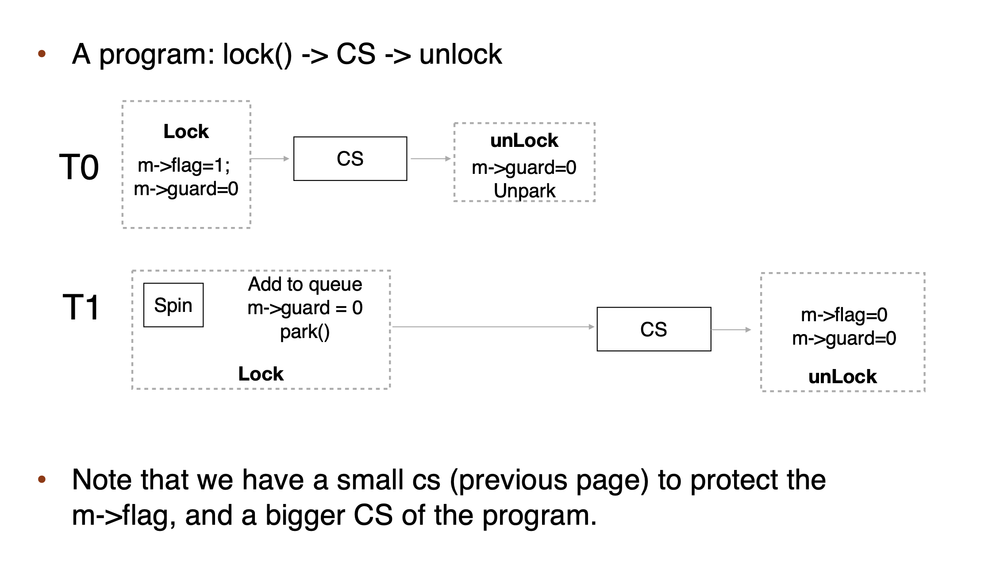
- Starvation 不一定死锁，但是死锁一定饥饿
Priority Inversion¶
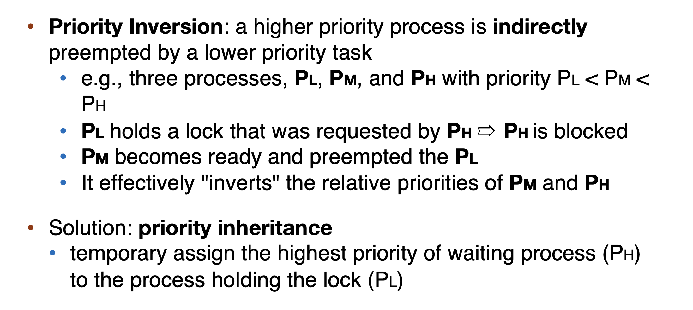
Linux Implementation¶
See Slides
POSIX Synchronization¶
mutex locks¶
-
Creating and initializing the lock
-
Acquiring and releasing the lock
semaphores¶
- Named semaphores & Unnamed semaphores
condition variable¶
See Slides
创建日期: 2024年12月27日 21:05:43